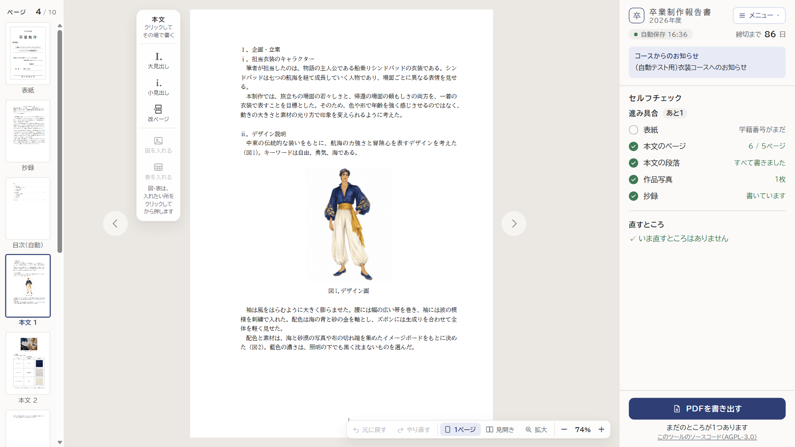
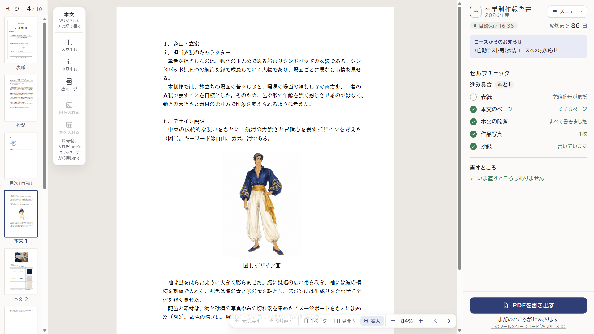
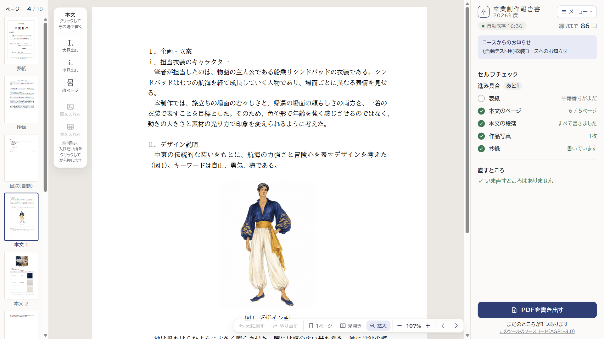

いまの「拡大」の 100% は「本文の幅を画面に合わせた大きさ」で、「1ページ」（ページ全体が入る大きさ）とは別の数え方です。どの案も、右下の帯に「－ ＋」をいつも出し、「1ページ」からでも少しずつ大きくできるようにします（下の数字は、この画面の大きさのとき）。



| 1ページ | 間の大きさ | 拡大 | |
|---|---|---|---|
| いま拡大が 100%「－ ＋」は拡大のときだけ。100% より小さくできない | できない | ||
| 案A拡大は 100% のまま、下にも段1ページは 69%。100% が「拡大」なのは今と同じ | |||
| 案B（おすすめ）1ページを 100% に＋で 125%・150%…と大きくなる。拡大は、この画面では 146% | |||
| 案C紙の実寸を 100% に（Word と同じ数え方）1ページは 74%、拡大は 107%。画面の大きさで変わる |
「1ページ」「拡大」のボタンは、どの案でも今のまま残します（押すと、その大きさにすぐ戻る）。間の大きさのときは、拡大と同じく、ホイールで上下に動かして読み書きします。
案B の「拡大」の数字（146%）や、案C の数字は、窓の大きさによって変わります。